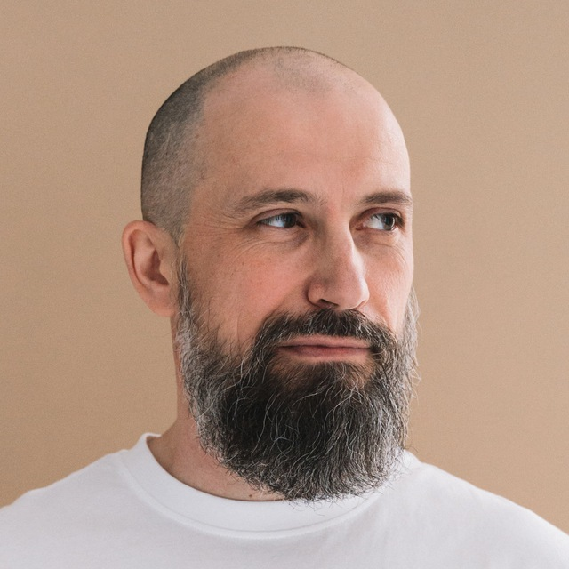

Experienced Java Software Engineer with a track record of success in global commodity
trading and banking domains. Proficient in Java, Spring, Microservices, PostgreSQL, and Oracle Database.
Skilled in backend development, bug fixing, and performance optimization, with strong documentation and
CI/CD expertise. Passionate about delivering measurable outcomes.

Birthday: 02.05.1980
Location: Novi Sad, Serbia
Phone: +381 61 657 3966
Email: s.a.babrakov@gmail.com
Degree: Specialist (Masters)
Languages: English – Professional Working; Russian – Native; Serbian – Elementary
Languages: Java, SQL
Tools/IDE: IntelliJ IDEA, VS Code, Postman, TeamCity, Git
Version control: Git
DB: PostgreSQL, Oracle Database, MySQL
Team organization tools: Jira, Confluence, Trello
Top Skills: Java, Spring, PostgreSQL
Backend Skills:
Software testing: JUnit, TestNG, Fiddler, Postman
Frontend Skills: HTML, CSS, Bootstrap, JavaScript, Angular
DXC Technology, Novi Sad, Vojvodina, Serbia
Stack: Java 17, Spring, Oracle Database, Git, TeamCity, TestNG
RSHB-Intech, Krasnodar, Russia
Stack: Java 11, Spring Boot, Project Reactor, Camunda, Maven, Angular, PostgreSQL, Elasticsearch, Apache Kafka, Microservices
Kuban Credit Bank, Krasnodar Territory, Russian Federation
Stack: Java 8–11, Spring Boot, PostgreSQL, MySQL
Uralsib, Krasnodar Territory, Russian Federation
Stack: PHP, LAMP (Linux, Apache, MySQL, PHP)
RostSvyaz, Krasnodar, Russia
NIPIGAS, Krasnodar, Russia
Kuban State Technological University
References are available upon request:
Email: s.a.babrakov@gmail.com
Telegram: @Babrakov